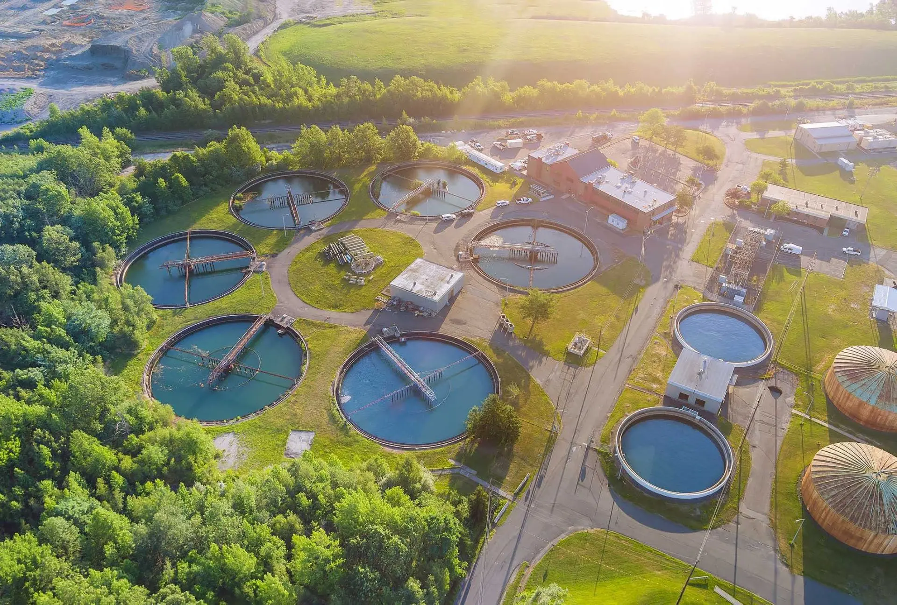
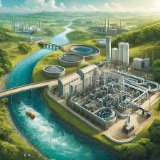

A tecnologia desempenha um papel crucial tanto no campo quanto na cidade, trazendo avanços significativos em produtividade, comunicação, transporte e qualidade de vida. No campo, ela otimiza a produção agrícola, aumenta a eficiência do trabalho
e promove a sustentabilidade, enquanto na cidade, facilita a comunicação, otimiza o transporte e melhora a qualidade de vida dos cidadãos.
Quais são as tecnologias usadas no campo?
No campo, diversas tecnologias são utilizadas para aumentar a eficiência, produtividade e sustentabilidade da agricultura. Algumas das principais são: sensores, drones, agricultura de precisão (com GPS e sistemas de gestão), robótica, softwares e aplicativos, sistemas de irrigação inteligentes, veículos autônomos (tratores e colheitadeiras), imagens de satélite e até mesmo a utilização de inteligência artificial.
Qual é o impacto da tecnologia no campo?
A tecnologia tem um impacto significativo no campo, otimizando a produção, aumentando a eficiência e promovendo a sustentabilidade. Ferramentas como drones, sensores, softwares de gestão e agricultura de precisão permitem uma melhor gestão das lavouras, otimizando o uso de recursos, reduzindo desperdícios e aumentando a produtividade.
Quais são dois exemplos de inovação tecnológica no campo e na cidade?
No campo, um exemplo de inovação tecnológica é a agricultura de precisão, que utiliza drones e sensores para monitorar as culturas e otimizar o uso de recursos. Na cidade, um exemplo é a implementação de tecnologias de transporte inteligente, como veículos autônomos e sistemas de trânsito inteligentes, para melhorar a mobilidade urbana.
Como a biotecnologia pode ser aplicada à agricultura?
A biotecnologia tem contribuído para melhorar a qualidade de plantas e aumentar a produtividade agrícola, de forma sustentável e focada na conservação ambiental. Dessa forma, vem ajudando a produzir alimentos de maior valor nutritivo e espécies mais adaptadas a condições adversas de clima e solo, além de mais resistentes a pragas, doenças e pesticidas.
Com a biotecnologia, também tem sido possível reduzir custos e perdas pós-colheitas, pela produção de variedades que amadurecem mais lentamente que as convencionais. Permite, ainda, um uso mais eficiente do solo – como o plantio direto, que evita a erosão – e oferece novas possibilidades para os cultivos tradicionais, como a produção, por meio de plantas, de plásticos biodegradáveis, tecidos com amido e compostos farmacêuticos. Em resumo, a biotecnologia é uma poderosa ferramenta que pode ser usada para monitorar o processo de extinção de espécies, pela quantificação da variabilidade genética (base da perpetuação de todas as espécies) existente nelas, por meio de testes de DNA.


O que é a resistência de insetos?
A variabilidade genética existente em todas as espécies possibilita que populações de insetos que estejam sob pressão respondam a um determinado fator de seleção, independentemente desse fator ser uma cultura Bt. A utilização de variedades Bt sem a adoção de práticas que visem retardar a evolução da resistência tende a selecionar indivíduos resistentes no médio/longo prazos. A seleção natural por um inseticida – no caso a planta Bt que possui essa ação – permite que alguns insetos inicialmente muito raros, de ocorrência natural e pré-adaptados com genes de resistência sobrevivam e passem a característica de resistência para seus descendentes. Inicialmente, já que a maioria da população de insetos é suscetível, há controle efetivo. Entretanto, a pressão de seleção pelo uso contínuo da tecnologia faz com que indivíduos naturalmente resistentes sobrevivam e se tornem maioria na população. O uso de culturas Bt deve estar sempre associado ao plantio de áreas de refúgio que, em conjunto com outras práticas, atuam preventivamente retardando a resistência em populações de insetos.
Qual a importância do monitoramento de pragas?
O monitoramento de pragas na lavoura é fundamental na tomada de decisão. Essa prática determina a situação das pragas na cultura, avalia os danos e prejuízos que podem estar ocorrendo e define o momento da aplicação de inseticida. É por meio do monitoramento que é possível estabelecer os níveis de dano e níveis de controle das pragas. Ou seja, antes a população de pragas atingir um número de indivíduos que possam causar danos à lavoura, é o momento de utilizar as ferramentas de controle. Através do monitoramento também é possível entender qual ou quais pragas estão ocorrendo na área, definir o nível de controle e monitorar quais os inimigos naturais dessas pragas estão presentes. Com essas informações a tomada de decisão se tornar mais assertiva.
O que são as boas práticas agronômicas?
Elas são o conjunto de técnicas de manejo que ajuda o agricultor a fazer um uso sustentável da tecnologia e é composto por: dessecação antecipada, uso de semente certificada, tratamento de sementes, adoção de áreas de refúgio, controle de plantas daninhas e voluntárias e monitoramento de pragas. Neste site você encontrará muitas informações sobre cada uma delas.
.webp)
.jpeg)

.jpeg)